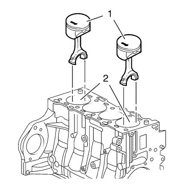
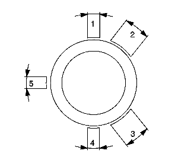
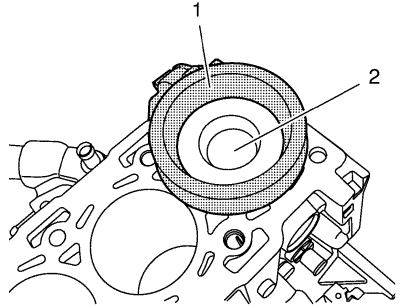

Sustitución de pistón, biela y cojinete
Herramientas especiales
EN-50174 Compresor de segmentos de pistón
Si desea informarse sobre herramientas regionales equivalentes, consultar Herramientas especiales
Procedimiento de desmontaje
- Retire la culata. Consultar
Sustitución de la culata : con CH-49290 .
- Desmonte el cárter de aceite. Consultar Sustitución del cárter de aceite
- Suba el vehículo a la altura máxima. Consultar Elevación del vehículo con un gato .
- Monte el tornillo del dámper del cigüeñal.
- Ponga los pistones 1 y 4 en el PMI en el sentido de giro del motor.

- Marque la biela con la cubierta (1) del cojinete de biela.

- Desmonte las 4 tuercas (2) de los sombreretes del cojinete de la biela, de los cilindros 1 y 4.
- Desmonte los sombreretes de cojinete de biela (1) y el cojinete de biela (3).

- Empuje los pistones 1 y 4 (1) y sáquelos del orificio del cilindro (2).
- Bajar el vehículo.
Nota: Las superficies de corte la biela y la cubierta del cojinete de biela forman un grupo único y no deben dañarse ni intercambiarse. No se apoye en las superficies de corte.
- Desmonte los pistones 1 y 4 (1).
- Suba el vehículo a la altura máxima.
- Gire el cigüeñal en el compensador del cigüeñal 180° en el sentido de giro del motor.
- Repita la acción para el pistón 2 y 3.

Nota: Observe la posición de montaje y la alineación correctas.
- Desmonte el cojinete de la biela (1, 2).
- Compruebe los componentes. Consultar Limpieza e inspección de pistones, bielas y cojinetes .
Procedimiento de montaje
Nota: Lubrique el cojinete de la biela con aceite de motor nuevo.
- Monte el cojinete de la biela (1, 2).

- Ajuste las juntas de segmento de pistón.
| • | Segmento superior de compresión del pistón en posición (1). |
| • | Segmento inferior de compresión del pistón en posición (4). |
| • | Segmento provisional de la ranura del segmento rascador de aceite del pistón en la posición (5), segmentos de acero de la ranura del segmento rascador de aceite en la posición (2) o (3). |

- Lubrique los segmentos de pistón, el pistón (1), la superficie del diámetro interior del cilindro y el compresor (2) del anillo de pistón EN-50174 con aceite de motor limpio.

Nota: La flecha de la cabeza del pistón señala al lado de la distribución del motor; el círculo de la cabeza de biela señala al lado del cambio del motor.
- Empuje los pistones 2 y 3 (1) y métalos en el orificio del cilindro (2).
- Suba el vehículo a la altura máxima.
- Monte los sombreretes de cojinete de biela (1) y el cojinete de biela (3).
Precaución: Consulte Precaución con las fijaciones en la sección Prólogo
- Instale 4 pernos NUEVOS (2) de los sombreretes del cojinete de la biela de los cilindros 2 y 3, y apriételos a 33 N·m (24 lib. pie).
- Gire el cigüeñal en el compensador del cigüeñal 180° en el sentido de giro del motor.
- Repita la acción para el pistón 1 y 4.
- Coloque el cigüeñal en el sentido de rotación del motor a 60° antes del PMS.
- Montar el cárter de aceite. Consultar Sustitución del cárter de aceite .
- Monte la culata. Consultar
Sustitución de la culata : con CH-49290 .
| © Copyright Chevrolet Europe. Reservados todos los derechos |